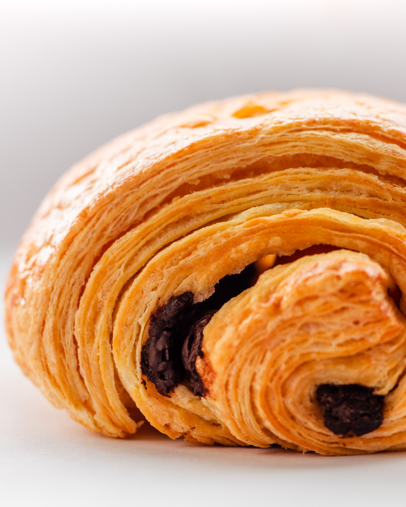
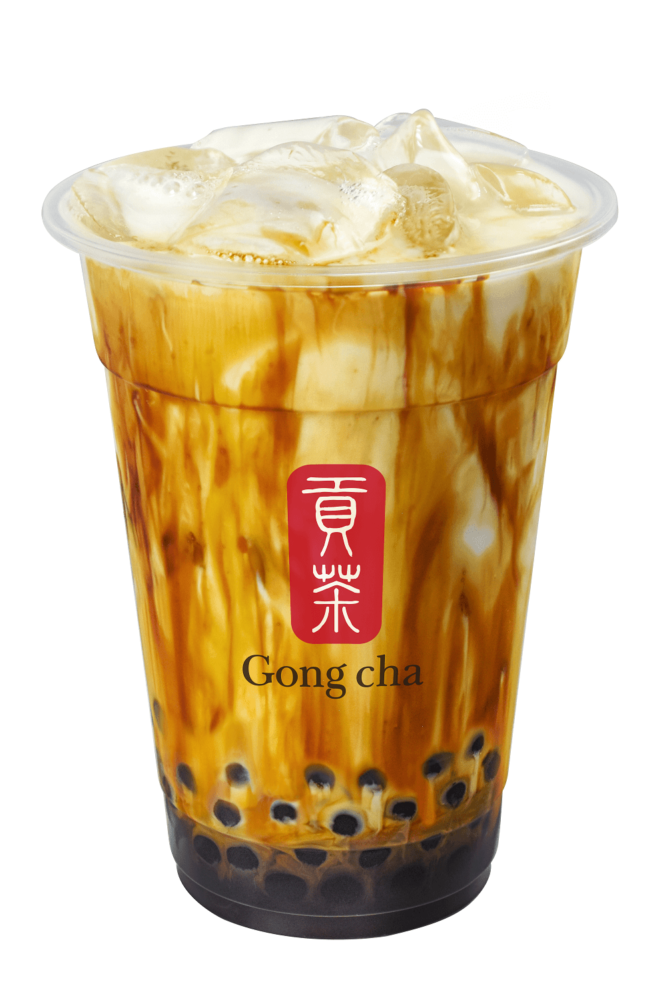

Welcome!
this website is about things I like and dislike. I love bubble tea.
My favorite flavor is Dirty Brown sugar. It is the best, especially from Gong Cha, it is so delicious, also plain croissants.



These are some of my favorite flavors!